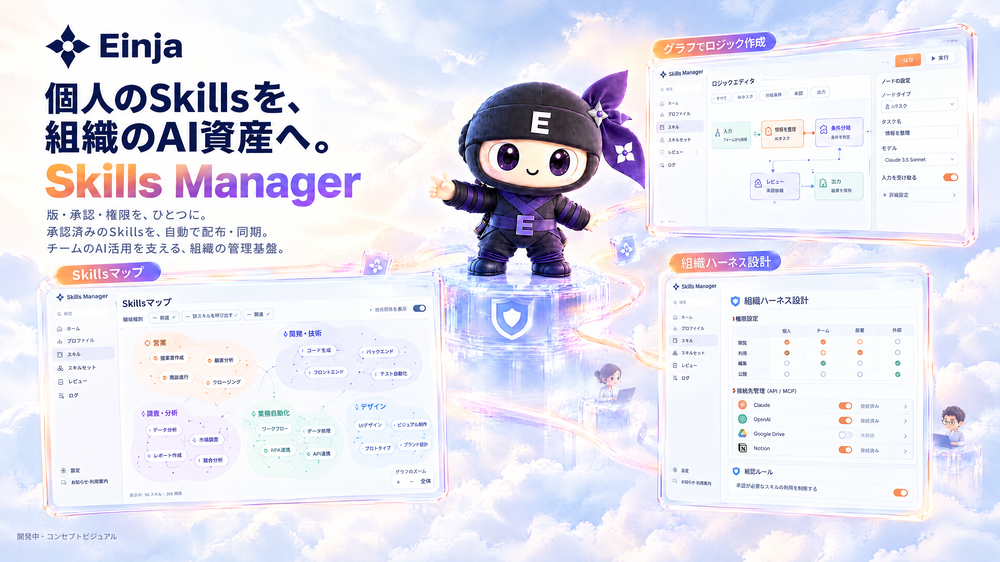

営業提案 / v1.2営業提案 / 最新_修正営業提案 / 最終版？
うまくいった方法が、
あの人のPCにしかない。
共有したのはプロンプトだけ。判断基準も、確認の手順も、本人の頭の中に。
FOR TEAMS THAT ALREADY USE AI
ClaudeやCodexを、もっと組織の力に。
誰かがつくった仕事の型を、
みんなが使える、育てられる資産へ。
開発中・デモ相談受付中画面イメージと業務例から、自社での活用を相談できます。

AIの処理と、人の判断をつなぐ。
01 / BEYOND PERSONAL PRODUCTIVITY
共有したのはプロンプトだけ。判断基準も、確認の手順も、本人の頭の中に。
よい成果物をつくれた経験が、次の担当者のスタート地点になっていない。
出自も、接続先も、承認の有無も個人まかせ。全社に広げる判断ができない。
02 / MAKE KNOW-HOW TRANSFERABLE
Skillとは、AIに仕事を任せるための
手順・判断基準・確認方法をまとめた「仕事の型」。
その型を、会社で確認して、配って、更新する。
それがSkill Managerの目指す役割です。
AIが勝手に学習して蓄積する仕組みではありません。人が確認し、登録したSkillを組織で共有します。
03 / ONE WORKFLOW, MANY NEXT STEPS
営業提案を例に、仕事の型が引き継がれるまで。
成果物だけでなく、そこに至る判断を残します。
想定活用例
FROM REQUEST TO REUSABLE SKILL
ご提案の方向性
架空の例：営業部20名。提案書の確認が部長に集中し、担当者ごとに品質がばらつく。
まず営業提案の1業務に絞り、部長が見ている確認基準を整理します。
提案の構成・参照資料・承認が必要な表現を、共通の仕事の型にまとめます。
少人数で試し、確認にかかる時間と差し戻し理由を記録してから展開を判断します。
「作業時間を50%削減できます」
根拠となる測定がないため、断定を差し戻し。
→「導入前後の確認時間を測り、効果を確かめます」に修正。
説明用の架空の例です。導入実績・実行結果ではありません。
04 / A CLEAR WAY TO WORK WITH AI
ファイル名を知っている人だけのSkillsから、
仕事の目的で見つけて使えるSkillsへ。
一つの運用につながる画面を設計しています。
分野ごとに俯瞰し、前提・呼び出し・関連をたどって、使いたいSkillを見つける。
A CLOSER LOOK / 実行トレース
工程ごとの判定と実行情報を、同じ画面で。
止まった理由を見つけ、次に直す場所を判断する。

ご紹介する内容と開発状況
05 / UNDER THE HOOD
何を受け取り、どう処理し、
どこで人が判断したのか。
仕事の中身を、工程単位で確かめる。
開発構想を含みます。デモで確認可能な範囲をご案内します。
06 / BUILT FOR ORGANIZATIONS
使い方を広げることと、会社として管理することを、一緒に。
閲覧・利用・編集・公開を分け、接続してよい外部サービスの範囲を決めます。
下書きからレビュー・公開へ。承認された版を、対象のメンバーへ配布・同期する設計です。
配布対象の版と端末の状態を確認。問題があれば、前の版へ戻す判断につなげます。
| 操作 | 利用者 | 管理者 |
|---|---|---|
| 承認済みSkillを使う | ✓ | ✓ |
| 下書きを登録する | ✓ | ✓ |
| 承認・公開する | — | ✓ |
| 配布・権限を設定する | — | ✓ |
Claude／Codex側の権限設定と組み合わせて運用します。Skill Manager単体で、すべての危険操作や情報流出を防ぐことを保証するものではありません。
07 / START SMALL. BUILD TOGETHER.
対象を絞り、管理者と現場で一周まわす。
効果を確かめてから、次のチームへ広げます。
部門・業務・最初のSkillsを選ぶ。
利用者・承認者・接続先を整理する。
管理者が確認し、現場で運用する。
反映時間・差し戻し・問い合わせを確認。
PRICING / 資料記載の予定価格
10,000 円 / アカウント
管理者・利用者ともにアカウントが必要です。08 / QUESTIONS, ANSWERED
既存のAI活用と組み合わせ、Skillsの作成・承認・配布・運用を支える構想です。現在の契約や利用環境を伺い、対応範囲をご案内します。AIサービスの契約費用が含まれるとは限りません。
共有に加えて、Skills同士の関係を探す、処理の流れを読む、承認した版を配る、配布後の状態と実行結果を確認する、という運用をつなぎます。ファイルを置いた後の仕事を支える設計です。
型を探す・読む・利用する・改善を依頼する操作を、画面で行う設計です。利用者も下書きを登録できます。公開、配布、権限や接続先の設定は管理者が担います。
いいえ。組織に残るのは、人が内容を確認して登録したSkillsです。改善も、人がレビュー・承認したものを次の版に反映する運用を想定しています。
現在開発中です。デモで確認できる画面や機能、想定する業務への適合、提供時期・導入条件をご案内します。すべての構想機能が利用可能なことや、即時導入をお約束するものではありません。
YOUR TEAM’S NEXT CHAPTER
一人の工夫を、組織の次の一歩へ。
あなたの会社のAI活用を、一緒に具体化しましょう。